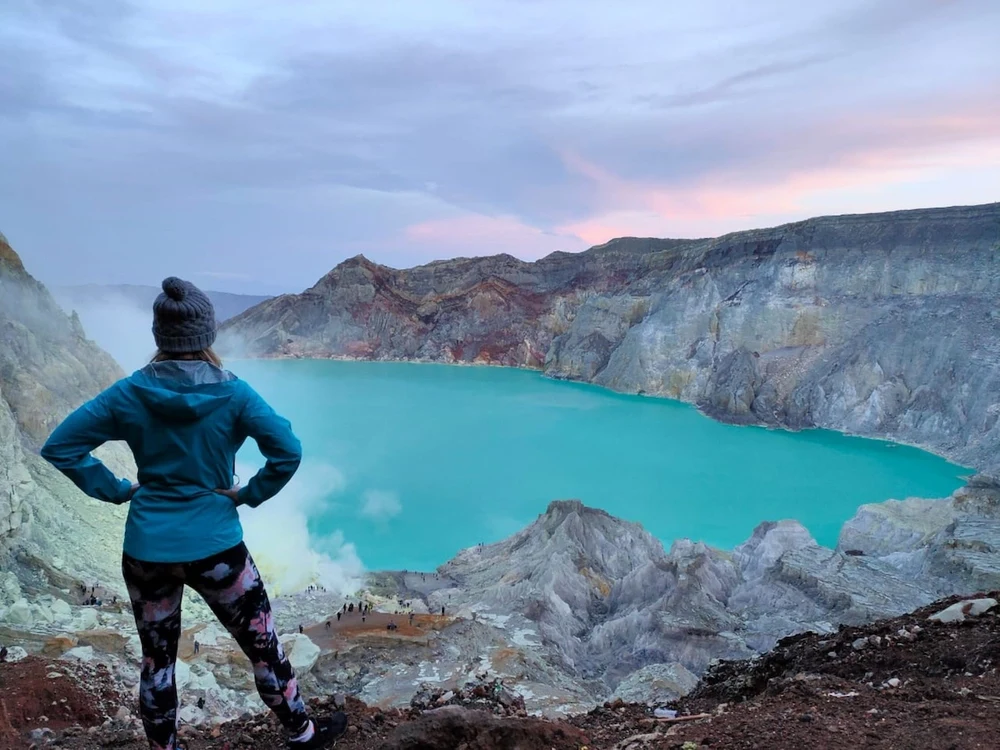
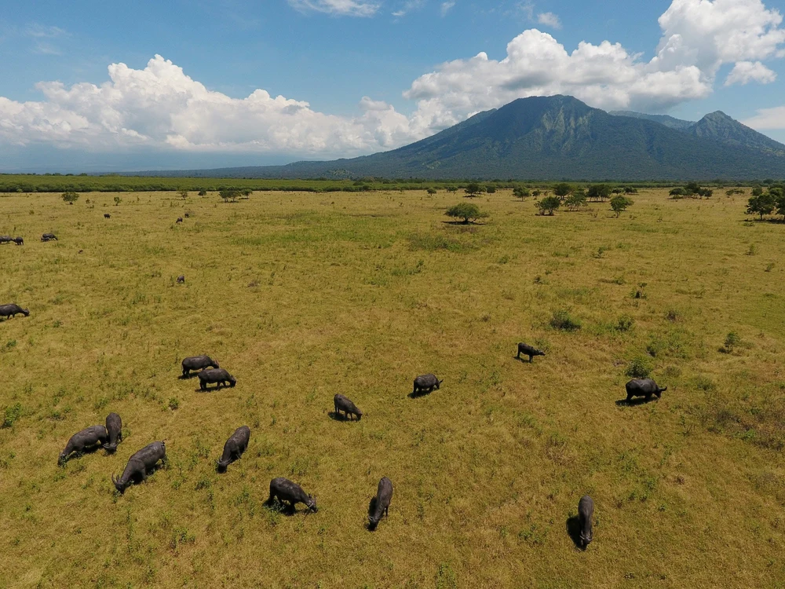
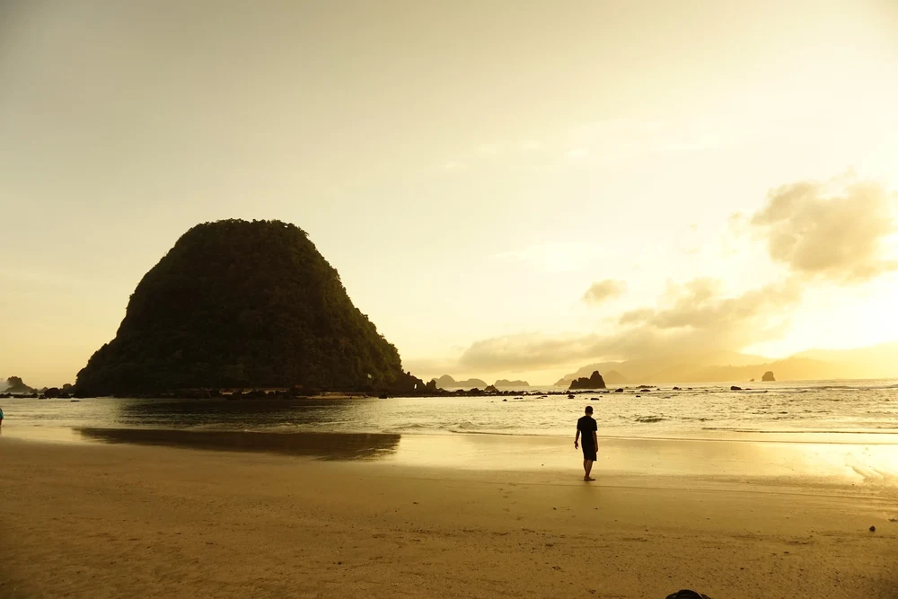
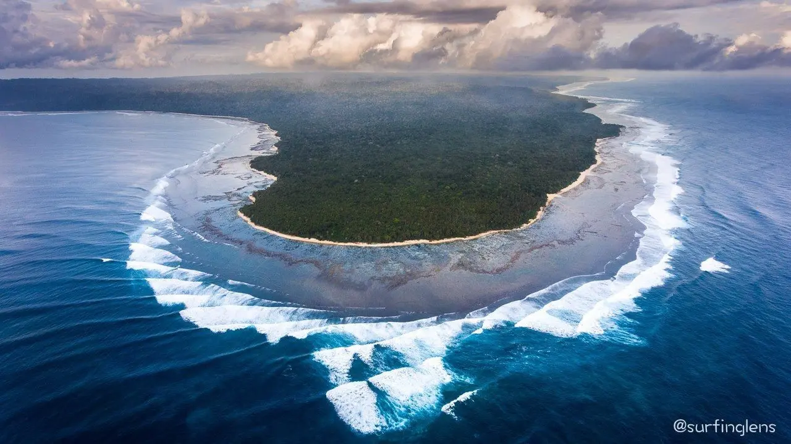

Kawah Ijen

bisa dibilang merupakan tempat wisata terpopuler di Banyuwangi bagi wisatawan Indonesia. Terletak di perbatasan Kabupaten Banyuwangi dan Kabupaten Bondowoso, Jawa Timur, Kawah Ijen terkenal bukan saja karena kawah hijaunya yang menawarkan panorama indah, tapi juga pertambangan belerangnya yang ikonik.
Kawah Ijen juga memiliki fenomena unik Blue Fire atau api biru.
Api biru ini adalah hasil dari terbakarnya gas sulfur yang muncul dari retakan Gunung Api Ijen yang memiliki temperatur hingga 600 derajat celcius. Api biru di Ijen ini adalah yang terbesar di dunia, dan satu lokasi lainnya di dunia yang memiliki fenomena ini hanyalah di Gunung Dallol di Ethiopia.
Baluran

Tempat wisata di Banyuwangi lainnya yang tak kalah populer adalah . Terlebih lagi, setelah video klip Raisa yang berjudul "Jatuh Hati" juga syuting di Taman Nasional Baluran. Pemandangan ala savana Afrika yang ternyata ada di Jawa Timur ini menjadi daya tarik utama Taman Nasional Baluran.
Meski secara teknis Taman Nasional Baluran masuk dalam daerah Kabupaten Situbondo, namun Baluran terkenal sebagai salah satu tempat wisata yang wajib dikunjungi kalau liburan ke Banyuwangi karena memang tidak terlalu jauh dari pusat kota Banyuwangi. Dengan mobil, Taman Nasional Baluran bisa dicapai sekitar 1,5 jam dari Banyuwangi. Selain menikmati savana ala Afrika di Baluran, kamu juga bisa bertemu dengan satwa liar termasuk rusa-rusa yang lucu, dan berfoto dengan lanskap yang magis di di Savana Bekol, hingga mampir ke Pantai Bama yang tak jauh dari sana.
Alas Purwo

Enggak mungkin membicarakan tempat wisata di Banyuwangi tanpa menyebut pantai-pantainya, jadi mari kita mulai dengan Pantai Pulau Merah! Pantai ini mengambil nama dari hal yang membuatnya unik: tak jauh dari pantai, terdapat "pulau" kecil dengan bukit yang tinggi, dan pulau ini memiliki tanah berwarna merah.
Pulau Merah bahkan bisa dicapai dengan berjalan kaki ketika laut sedang surut, sehingga wisatawan bisa mengeksplornya. Tapi selain Pulau Merah yang unik ini, Pantai Pulau Merah juga terkenal dengan pasirnya yang halus, membuatnya ideal untuk bermain. Pantai ini juga terkenal bagi para penggemar selancar atau surfing, karena ombak di sini yang bergulung-gulung indah membuatnya ideal untuk berselancar!. Berbeda dengan Pantai Plengkung yang terkenal sebagai spot surfing untuk para profesional, ombak di Pantai Pulau Merah relatif aman untuk peselancar pemula. Di sini bahkan ada persewaan papan surfing juga, lho.
Alas Purwo

Jika Taman Nasional Baluran terletak di utara Kabupaten Banyuwangi dan masuk dalam Kabupaten Situbondo, Taman Nasional Alas Purwo terletak di area selatan Banyuwangi. Seperti juga di Baluran, kamu juga bisa menemukan area savana ala Afrika lho di Taman Nasional Alas Purwo!
Jika dilihat di peta, Taman Nasional Alas Purwo memiliki bentuk area yang unik, karena terletak Semenanjung Blambangan yang terletak di ujung tenggara Pulau Jawa. Enggak cuma savana, area Taman Nasional Alas Purwo juga punya hutan bakau atau mangrove, hutan gugur tropis, dan beberapa pantai indah seperti Pantai Plengkung. Di area taman nasional juga kamu bisa melihat spesies-spesies langka seperti Banteng Jawa, Ajak atau Anjing Hutan Asia, hingga Lutung Kelabu.